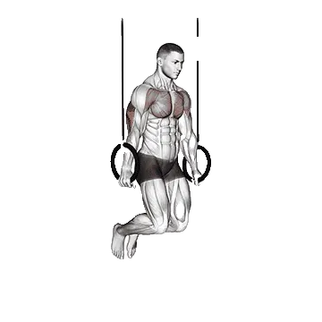

Ring dips
Ring dips adalah latihan lengan yang berfokus pada Pectoralis major, Triseps brachii, Biseps brachii. Repetisi rata-rata dan standar repetisi dapat dilihat dalam satu halaman.

Repetisi rata-rata: Menengah
Acuan untuk level menengah.
Repetisi rata-rata Ring dips
| Level | ||
|---|---|---|
| Dasar | < 1 | < 1 |
| Pemula | 5 | < 1 |
| Menengah | 13 | 8 |
| Mahir | 24 | 17 |
| Pro | 36 | 28 |
Catatan: nilai ini adalah estimasi repetisi rata-rata yang bisa dilakukan dalam satu set. Berat badan, rentang gerak, tempo, dan faktor pribadi lain dapat memengaruhi hasil. Lihat data detail pada tabel di bawah.
Posisimu saat ini
Cek level Ring dips
Bandingkan repetisi satu set dengan standar berat badan.
Hasil ini hanya perkiraan. Teknik, rentang gerak, dan kelelahan dapat mengubah hasil. Lihat metode
Standar repetisi Ring dips
Pria berdasarkan berat badan (kg) [Repetisi]
| Berat badan | Dasar | Pemula | Menengah | Mahir | Pro |
|---|---|---|---|---|---|
| 50 | < 1 | 5 | 14 | 25 | 37 |
| 55 | < 1 | 6 | 14 | 25 | 36 |
| 60 | < 1 | 6 | 14 | 24 | 35 |
| 65 | < 1 | 6 | 14 | 24 | 34 |
| 70 | < 1 | 6 | 14 | 23 | 33 |
| 75 | < 1 | 6 | 14 | 23 | 32 |
| 80 | < 1 | 6 | 13 | 22 | 31 |
| 85 | < 1 | 6 | 13 | 21 | 30 |
| 90 | < 1 | 6 | 12 | 21 | 29 |
| 95 | < 1 | 6 | 12 | 20 | 28 |
| 100 | < 1 | 6 | 12 | 19 | 27 |
| 105 | < 1 | 6 | 11 | 19 | 26 |
| 110 | < 1 | 5 | 11 | 18 | 26 |
| 115 | < 1 | 5 | 10 | 17 | 25 |
| 120 | < 1 | 5 | 10 | 17 | 24 |
| 125 | < 1 | 5 | 10 | 16 | 23 |
| 130 | < 1 | 4 | 9 | 16 | 22 |
| 135 | < 1 | 4 | 9 | 15 | 22 |
| 140 | < 1 | 4 | 9 | 14 | 21 |
Pria berdasarkan usia [Repetisi]
| Usia | Dasar | Pemula | Menengah | Mahir | Pro |
|---|---|---|---|---|---|
| 15 | < 1 | < 1 | 8 | 16 | 26 |
| 20 | < 1 | 4 | 12 | 23 | 34 |
| 25 | < 1 | 5 | 13 | 24 | 36 |
| 30 | < 1 | 5 | 13 | 24 | 36 |
| 35 | < 1 | 5 | 13 | 24 | 36 |
| 40 | < 1 | 5 | 13 | 24 | 36 |
| 45 | < 1 | 3 | 11 | 22 | 32 |
| 50 | < 1 | 1 | 9 | 18 | 29 |
| 55 | < 1 | < 1 | 7 | 15 | 24 |
| 60 | < 1 | < 1 | 4 | 11 | 20 |
| 65 | < 1 | < 1 | 1 | 8 | 15 |
| 70 | < 1 | < 1 | < 1 | 5 | 10 |
| 75 | < 1 | < 1 | < 1 | 1 | 7 |
| 80 | < 1 | < 1 | < 1 | < 1 | 4 |
| 85 | < 1 | < 1 | < 1 | < 1 | < 1 |
| 90 | < 1 | < 1 | < 1 | < 1 | < 1 |
Wanita berdasarkan berat badan (kg) [Repetisi]
| Berat badan | Dasar | Pemula | Menengah | Mahir | Pro |
|---|---|---|---|---|---|
| 40 | < 1 | < 1 | 7 | 16 | 27 |
| 45 | < 1 | < 1 | 8 | 17 | 27 |
| 50 | < 1 | < 1 | 8 | 16 | 26 |
| 55 | < 1 | 1 | 8 | 16 | 25 |
| 60 | < 1 | 1 | 8 | 16 | 24 |
| 65 | < 1 | 1 | 8 | 15 | 23 |
| 70 | < 1 | 1 | 8 | 14 | 22 |
| 75 | < 1 | 1 | 8 | 14 | 21 |
| 80 | < 1 | 1 | 7 | 13 | 20 |
| 85 | < 1 | 1 | 7 | 13 | 19 |
| 90 | < 1 | < 1 | 7 | 12 | 19 |
| 95 | < 1 | < 1 | 6 | 11 | 18 |
| 100 | < 1 | < 1 | 6 | 11 | 17 |
| 105 | < 1 | < 1 | 6 | 10 | 16 |
| 110 | < 1 | < 1 | 5 | 10 | 15 |
| 115 | < 1 | < 1 | 5 | 9 | 15 |
| 120 | < 1 | < 1 | 4 | 9 | 14 |
Wanita berdasarkan usia [Repetisi]
| Usia | Dasar | Pemula | Menengah | Mahir | Pro |
|---|---|---|---|---|---|
| 15 | < 1 | < 1 | 3 | 10 | 19 |
| 20 | < 1 | < 1 | 7 | 16 | 26 |
| 25 | < 1 | < 1 | 8 | 17 | 28 |
| 30 | < 1 | < 1 | 8 | 17 | 28 |
| 35 | < 1 | < 1 | 8 | 17 | 28 |
| 40 | < 1 | < 1 | 8 | 17 | 28 |
| 45 | < 1 | < 1 | 7 | 15 | 25 |
| 50 | < 1 | < 1 | 5 | 12 | 21 |
| 55 | < 1 | < 1 | 2 | 9 | 18 |
| 60 | < 1 | < 1 | < 1 | 7 | 14 |
| 65 | < 1 | < 1 | < 1 | 3 | 10 |
| 70 | < 1 | < 1 | < 1 | < 1 | 7 |
| 75 | < 1 | < 1 | < 1 | < 1 | 3 |
| 80 | < 1 | < 1 | < 1 | < 1 | < 1 |
| 85 | < 1 | < 1 | < 1 | < 1 | < 1 |
| 90 | < 1 | < 1 | < 1 | < 1 | < 1 |
Catatan: nilai pada tabel adalah referensi repetisi yang dapat dilakukan dalam satu set. Data berdasarkan berat badan membantu memperkirakan beban relatif, sedangkan data berdasarkan usia membantu melihat perbedaan tren.
Otot yang dilatih
| Grup | Otot |
|---|---|
| Otot utama | Pectoralis major, Triseps brachii, Biseps brachii, Deltoid |
| Otot pendukung | Latissimus dorsi |
| Otot stabilisator | Rectus abdominis, Oblique eksternal, Trapezius |
| Grip | Fleksor lengan bawah |
Catat dan analisis di aplikasi Shiba
Lihat beban, repetisi, dan perkembangan di satu tempat.
Cara membaca tabel
| Level | Deskripsi | Distribusi |
|---|---|---|
| Dasar | Menguasai teknik yang benar dan berlatih konsisten minimal 1 bulan. | Bawah 5% |
| Pemula | Berlatih konsisten minimal 6 bulan. | Atas 80% |
| Menengah | Berlatih konsisten lebih dari 2 tahun. | Atas 50% |
| Mahir | Berlatih terencana lebih dari 5 tahun. | Atas 20% |
| Pro | Menekuni latihan ini secara khusus lebih dari 5 tahun. | Atas 5% |